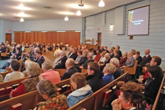

|
North York Temple |
| Есть некоторый барьер в общении между нами и англоязычными братьями и сестрами или может быть он существует только у меня. Но когда я смотрю, что брат почти свободно говорящий на английском, смущается в разговоре с коренным канадцем и стремится отойти в сторону, то мой плохой английский возможно не основная причина барьера. |
|  |
| Может быть оттого, что большая часть NYT люди старшего
возраста? С другой стороны мы до сих пор дружим с англоязычными из NCC. Возможно просто необходимо время и совместная работа на ниве христианской. |
|
Детских хор в NYT пользуется большой популярностью, у него
уже выпущен диск и он имеет приглашения для выступлений в разных местах города. Мне даже
говорили, что это лучший детский хор в городе. Никто из русскоязычных еще не решился направить туда своего ребенка. (Времени с написания этого файла прошло достаточно, почти дыа года, и уже несколько русскоязычных детей в детском хоре) |
| Не отстает от детей и взрослых хор. Когда я впервые услышал песню в из исполнении, то был потрясен мастерским исполнением чрезвычайно сложной песни. |
| И конечно традиционный для SA духовой оркестр просто непревзойден. Музыканты не только играют хорошо, но и большая часть из них поет в хоре. |
|
| Есть некоторая особенность в SA: у баптистов молитвенное покаяние уже христианина (за какой-то проступок или намерение) проходит при преклоненных коленях впереди собрания, в SA есть скамья, которая в русском переводе обозначена, как "престол" и кающийся преклоняет колени перед скамье и Библией за ней. |
|
У брата Богдана, в отличии от многих, нет проблем в общении
с англоязычными сестрами и братьями. Будем и мы смотреть в будущее с оптимизмом. |